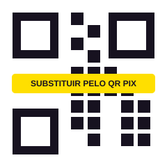

Execução no PC
O código convidado deve rodar diretamente na CPU do computador. Serviços do sistema e interfaces gráficas são reimplementados ou traduzidos para o ambiente Windows.
Mais do que só pelo GTA VI — é para mostrar que o Brasil também tem gente foda desenvolvendo engenharia reversa e recompilação de alto nível.
O apoio é voluntário e pode ajudar com hardware, testes e infraestrutura. Não há promessa de venda, jogo completo ou release pública garantida; este site não publica prestação financeira da equipe.
50450a25-89df-446c-92cc-e56f64a5ab7a

Abra o app do seu banco, escolha Pix Copia e Cola e use a chave acima. O QR atual é apenas um placeholder e não pode ser escaneado.Mais do que só pelo GTA VI — é para mostrar que o Brasil também tem gente foda desenvolvendo engenharia reversa e recompilação de alto nível.
 Captura do launcher
Captura do launcher
Segundo a descrição do projeto, o XLaunchVI busca executar software de Xbox Series X|S (Scarlett) em PCs Windows x86-64 por meio de uma camada de compatibilidade própria.
O código convidado deve rodar diretamente na CPU do computador. Serviços do sistema e interfaces gráficas são reimplementados ou traduzidos para o ambiente Windows.
A equipe descreve um backend próprio de Direct3D 12 em desenvolvimento, além de suporte a Vulkan. A abordagem é apresentada como distinta das soluções de compatibilidade citadas como VIctory e XCL.
O launcher segue uma estratégia própria de tradução e execução no Windows. O objetivo é ocupar menos espaço em disco no PC; ainda não há benchmark público que quantifique essa redução.
A ambição inclui jogos de Xbox 360 até Xbox Series S. Neste momento, o foco informado foi redirecionado para GTA VI, com interface personalizável e atualizações contínuas como objetivos do projeto.
Os detalhes de arquitetura e desempenho acima refletem informações fornecidas pela equipe e não foram verificados de forma independente por este site.


A equipe relata a inicialização do jogo; o resultado não foi reproduzido independentemente.
Menus reportados a 30 FPS, ainda sem texturas. O foco técnico atual é otimizar memória e shaders.
Janela de planejamento interna, não uma promessa: avançar na otimização de memória/shaders e no estágio de renderização.
Estimativa baseada no progresso e no ritmo das notícias do tracker. Não é uma data de lançamento oficial nem uma garantia.
A meta da próxima semana é uma intenção interna informada para esta página. A projeção de 60 dias é aproximada e pode mudar conforme o tracker recebe dados; o contador da home permanece dinâmico e pode mostrar outro valor.